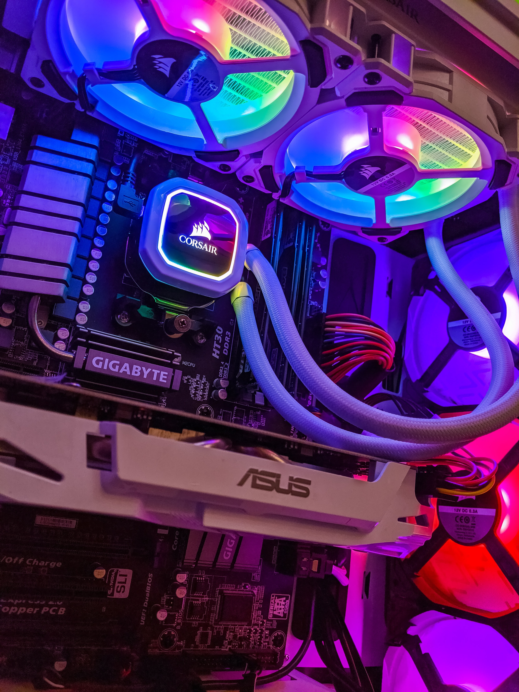

Buying or Building your First Computer:
When buying a computer beyond just going to your local Walmart, people often will decide to buy a prebuilt or try to assemble a computer themselves. There are many things to consider when building a personal computer versus prebuilt computers. When building a computer without assistance it can be challenging even getting started. There are many different resources available to anyone who wants to build a computer.
YouTube is an amazing resource to utilize to learn how to build a personal computer as well as classes on Udemy that will teach a student to understand, build, and troubleshoot personal computers. There is a website called PC Part Picker that will assist in making sure the parts are all compatible and where an individual can purchase them.
Prebuilt computers can be purchased through places like Amazon, iBUYPOWER, and Ironside. Ironside and iBUYPOWER usually offer multiple types of builds to choose from or they can completely customize it for a customer's needs and wants. Some of these companies will often offer warranties on their equipment they are selling to the customer, which can give the customer a more piece of mind when purchasing a product above a certain price point.